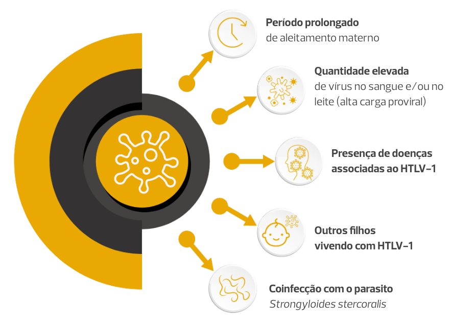
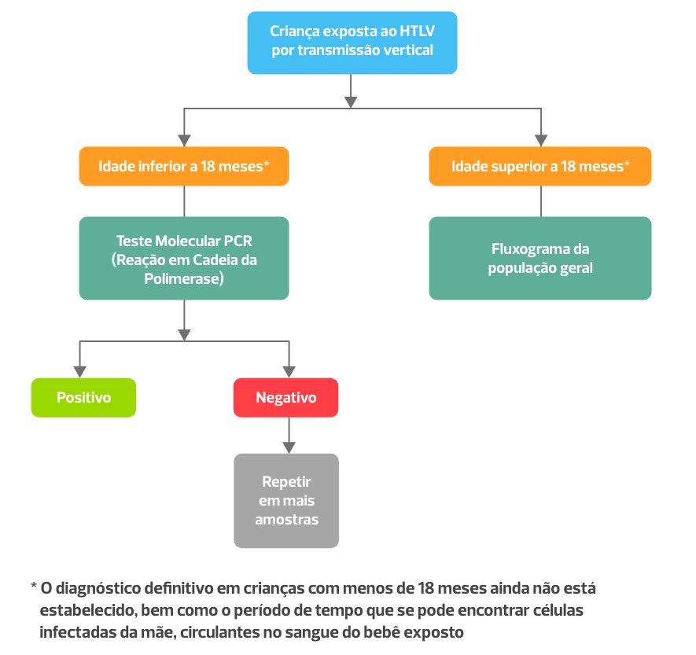

Módulo 2 | Aula 3
Políticas de prevenção da transmissão vertical do HTLV
Objetivos de aprendizagem
- Conhecer fatores para prevenir a transmissão vertical do HTLV.
- Conhecer as políticas de prevenção da transmissão vertical do HTLV no Brasil e no mundo.
Sobre a transmissão vertical do HTLV
A transmissão vertical (da mãe para o filho) do HTLV-1/2 ocorre principalmente através do aleitamento. A transmissão por outras vias, como por exemplo, durante a gestação e no momento do parto, também pode ocorrer, mas são menos frequentes. Na ausência de políticas públicas, cerca de 20% das crianças nascidas de mães vivendo com HTLV-1 serão infectadas.
Conheça os fatores que aumentam o risco de transmissão vertical do HTLV-1
É possível reduzir de forma significativa a transmissão vertical deste vírus, prevenindo cerca de 80% das infecções. Este é o tema abordado neste capítulo.
Como prevenir a transmissão vertical
A transmissão vertical do HTLV-1 pode ser prevenida a partir de uma combinação de estratégias. Conheça as formas de prevenir a transmissão vertical do HTLV:
• Capacitação de profissionais de saúde
A prevenção da transmissão vertical do HTLV começa com informação. É importante que os profissionais de saúde tenham conhecimento sobre o HTLV, as consequências desta infecção, formas de transmissão e métodos de prevenção e cuidado. Treinamento de profissionais de saúde, principalmente daqueles envolvidos na atenção primária é um passo importante para o controle do HTLV.
• Testagem de todas as gestantes para HTLV
É importante identificar quais gestantes vivem com HTLV. Isto só é possível, através da testagem universal no pré-natal. Os testes utilizados para diagnóstico da gestante não diferem dos testes utilizados para a população em geral.
Quando testar a gestante? O teste para HTLV-1 deve ser oferecido nas seguintes situações:
- Para todas as gestantes na primeira visita no cuidado pré-natal. Assim, caso o teste de triagem seja positivo, haverá tempo suficiente para realização de exames confirmatórios e aconselhamento antes do parto.
- Caso a gestante não tenha sido testada para HTLV durante o cuidado pré-natal, é indicada a testagem no momento do parto. Em alguns locais, como no estado da Bahia, é indicada a testagem para HTLV em dois momentos durante o pré-natal, um no primeiro trimestre da gestação e outro no momento do parto.
- Durante a etapa de planejamento familiar para casais que pretendem engravidar.
• Aconselhamento e informação para gestantes vivendo com o vírus
Uma vez identificadas as gestantes vivendo com o vírus, é importante o acolhimento e informação. Esta é uma etapa essencial para garantir o sucesso de políticas de prevenção da transmissão vertical do HTLV-1. As gestantes devem receber informações sobre o vírus, formas de transmissão, prevenção e doenças associadas. É importante destacar que o HTLV causa uma infecção que persiste por toda a vida e que, até o momento, não existem medicamentos que controlem esta infecção. É essencial abordar as formas de transmissão e prevenção da transmissão, incluindo prevenção da transmissão sexual, para evitar a disseminação do vírus para parceiros sexuais. Nesta etapa, o acolhimento feito por pares pode auxiliar no processo.
• Recomendação de suspensão do aleitamento materno e provimento de fórmula láctea infantil
O aleitamento materno é a principal via de transmissão vertical do HTLV-1. A suspensão do aleitamento materno previne cerca de 80% das infecções verticais e reduz de forma significativa a transmissão vertical deste vírus. Por isso, esta é a principal recomendação para as gestantes, puérperas, parturientes e lactantes vivendo com HTLV-1. Ressalta-se que é necessário explicar sobre o preparo da fórmula láctea infantil e informar às mulheres vivendo com HTLV-1 o direito ao substituto de leite materno gratuito no Sistema Único de Saúde.
Considerações sobre outros possíveis métodos de prevenção
Ainda não existe evidência clínica sobre a eficácia dos medicamentos antiretrovirais para a prevenção da transmissão vertical do HTLV. Sendo assim, estes medicamentos não são recomendados para as pessoas vivendo com HTLV.
Experimentos em cultura de células indicam que alguns medicamentos antiretrovirais usados para o controle da infecção pelo HIV, particularmente os inibidores da integrase, podem ser efetivos para prevenir a infecção pelo HTLV (profilaxia pré-exposição). É importante ter mais investimento em pesquisa clínica para avaliar a eficácia destes medicamentos para prevenir a transmissão vertical.
Também não existe informação suficiente para embasar a recomendação de parto cesariana para mulheres vivendo com HTLV. É necessário realizar estudos sobre risco-benefício desta recomendação.
• Acompanhamento das gestantes vivendo com HTLV-1 e crianças expostas
Avaliação clínica detalhada das pessoas vivendo com HTLV-1 é importante para o diagnóstico e tratamento precoce das doenças associadas ao HTLV-1, quando necessário. Destaca-se que o acompanhamento da gestante deve ser realizado por toda a vida de forma regular.
O acompanhamento da criança exposta ainda é um desafio e deve incluir testagem para HTLV, para verificar se houve transmissão vertical.
Todas as crianças nascidas de mulheres vivendo com o HTLV apresentam anticorpos para o vírus ao nascimento. Estes são anticorpos maternos que foram transferidos para o bebê durante a gestação. Após o nascimento, há uma redução gradativa da quantidade destes anticorpos no sangue dos bebês.
Com o passar do tempo, as crianças que foram infectadas passam a produzir seus próprios anticorpos contra o HTLV-1. Ainda não existe consenso em quando deve ser realizada a testagem da criança exposta para o HTLV-1. No entanto, para crianças que se alimentaram exclusivamente com fórmula láctea, é indicada a testagem após os 18 meses de idade.
Fluxograma de diagnóstico em crianças expostas
Políticas públicas para prevenção da transmissão vertical do HTLV-1 no mundo
Alguns países, como Japão e territórios franceses no Caribe foram pioneiros na implementação de políticas públicas voltadas para a prevenção da transmissão vertical do HTLV-1.
No final da década de 1980, um programa de prevenção da transmissão vertical já havia sido implementado na região de Nagasaki, no Japão, e na Guiana Francesa. Estes programas foram altamente hesitosos. Em Nagasaki, por exemplo, houve redução significativa na taxa de transmissão vertical (de 20% para 2,5%). Em 2010 o Japão expandiu o programa, que passou a ser nacional. Atualmente, apenas nestes dois locais e na ilha de Santa Lúcia há testagem sistemática de gestantes para HTLV-1.
Alguns especialistas de países europeus propuseram testagem seletiva de gestantes consideradas de alto risco. Em locais como Reino Unido, Espanha e Suécia, a prevalência do HTLV é considerada baixa, porém está concentrada em alguns grupos populacionais específicos. Neste contexto, a estratificação de risco pode ser interessante para garantir que a política seja custo-efetiva. No Brasil, a testagem universal de gestantes é recomendada.
Embora a testagem de gestante para HTLV ainda seja bem restrita, muitos países e associações internacionais apresentam recomendações para prevenir a transmissão vertical do HTLV.
A recomendação mais frequente é a suspensão do aleitamento materno e substituição de leite materno por fórmula láctea infantil. Esta é a recomendação do Chile, Uruguai, Colômbia, Canadá, Estados Unidos da América, Santa Lúcia e Guiana Francesa. No Japão, recomenda-se a suspensão do aleitamento materno, aleitamento materno por três meses ou uso de leite congelado e descongelado. Em Santa Lúcia, a política pública prevê a oferta gratuita de substituto do leite materno para gestantes em situação de vulnerabilidade social.
A resposta ao HTLV tem avançado no cenário mundial, particularmente na região das Américas. Em 2019 a Organização Mundial de Saúde (OMS) publicou o primeiro relatório técnico sobre o HTLV. Já em 2022, a OMS reconheceu o HTLV-1 como um problema de saúde pública e este agravo foi incluído no planejamento estratégico da OMS para infecções sexualmente transmissíveis (2022-2030). Umas das metas referentes ao HTLV-1, neste documento, é a prevenção da transmissão vertical. Em junho de 2024, a OMS se comprometeu em desenvolver guias internacionais voltadas ao diagnóstico e prevenção do HTLV.
A Organização Pan-Americana de Saúde (OPAS) também tem trabalhado em parceria com colaboradores brasileiros para avançar na resposta ao HTLV. Neste intuito, workshops anuais vem sendo organizados, desde 2021.
O primeiro simpósio online objetivou discutir com diferentes atores de diferentes países, as políticas públicas existentes para o vírus no mundo. Nesta ocasião, ficou clara a importância do HTLV e a necessidade de focar a resposta na prevenção da transmissão vertical. Em 2022, a OPAS, em colaboração com o HTLV Channel e com o Ministério da Saúde do Brasil organizou um workshop para discutir a resposta ao HTLV-1 no contexto da saúde materno-infantil, identificando oportunidades e barreiras para avançar a resposta na região. Já em 2023, o workshop teve como objetivo discutir como ampliar o diagnóstico do HTLV-1 durante o pré-natal.
Em 10 novembro de 2024, dia Mundial de Combate ao HTLV, a Organização Mundial de Saúde (OMS) realizou um webinário para aumentar a sensibilização e fortalecer a resposta global ao vírus. Nessa ocasião, a OPAS lançou a Nota Técnica sobre boas práticas para prevenção da transmissão vertical do HTLV no contexto da iniciativa EMTCT Plus.
Durante estas interações com parceiros internacionais, incluindo pessoas vivendo com HTLV-1, especialistas, gestores de saúde e formuladores de políticas públicas, foi identificada a oportunidade de integração do HTLV dentro da iniciativa de eliminação da transmissão vertical do HIV, sífilis, hepatite B e doença de Chagas (EMTCT Plus).
Atualmente, a OPAS trabalha com grupo de especialistas na construção de um documento com boas práticas para prevenção da transmissão vertical do HTLV-1. O documento também pretende propor metas e objetivos programáticos preliminares para que os países atinjam a eliminação da transmissão vertical do HTLV-1 como um problema de saúde pública.
A região das Américas apresenta ambiente favorável para avançar nas políticas de prevenção da transmissão vertical. Na maioria dos países da região, particularmente na América do Sul e no Caribe, a prevalência do HTLV é considerada alta, existe boa cobertura do programa de saúde materno-infantil, e boa cobertura para testagem para HTLV em bancos de sangue. De fato, países da região, como Colômbia e Chile já mostraram interesse em avançar na resposta. E o Brasil tem sido um importante líder no que se refere à eliminação da transmissão vertical do HTLV-1.
Políticas públicas para prevenção da transmissão vertical do HTLV-1 no Brasil
O Ministério da Saúde recomenda a suspensão do aleitamento materno para as mães vivendo com HTLV-1. Além disso, mulheres vivendo com este vírus têm direito a receber, de forma gratuita, o medicamento que inibe a lactação (cabergolina) e fórmula láctea infantil.
De acordo com a Nota Informativa nº 4 de 2021 CGIST/DCCI/SVS/MS, a inibição da lactação deve ser realizada imediatamente após o parto. Dois comprimidos de 0,5mg de cabergolina devem ser administrados por via oral, em dose única, antes da alta hospitalar. A dose pode ser repetida nas raras situações de lactação rebote. Além disso, a fórmula láctea infantil deve ser fornecida por no mínimo seis meses. Este prazo pode ser estendido dependendo da avaliação da equipe de saúde.
Assegurar acesso imediato à fórmula láctea infantil é importante para o sucesso desta política pública. Por isso, a maternidade deve disponibilizar, no mínimo quatro latas de fórmula láctea, quantidade suficiente para alimentar a criança exposta até ela estar devidamente matriculada nos serviços de atenção e cuidado.
Caderneta da Gestante
Apresenta os direitos da gestante, incluindo o direito de receber gratuitamente,
a fórmula láctea. A Caderneta da Gestante está
disponível na Biblioteca Virtual em
Saúde.
Com o objetivo de reduzir o risco de transmissão puerperal do HTLV-1, o Ministério da Saúde recomenda o clampeamento precoce do cordão umbilical no caso de mães vivendo com o HTLV-1. A recomendação está na Portaria no 306, de 28 de Março de 2016.
Em fevereiro de 2024, a Comissão Nacional de Incorporação de Tecnologias no Sistema Único de Saúde (CONITEC) aprovou de forma unânime a implementação da testagem para HTLV-1 no pré-natal no Sistema Único de Saúde. A decisão foi publicada na Portaria SECTICS/MS no 13 de 03/04/24. Assim, a triagem para HTLV-1 no pré-natal passa a ser recomendada de forma universal no país. A testagem de gestantes inclui teste de triagem em amostra de sangue para detecção de anticorpos contra o HTLV-1 e teste confirmatório para as gestantes com amostras reagentes na triagem. Antes desta resolução, apenas alguns estados e municípios brasileiros ofereciam triagem para HTLV-1 no pré-natal. Agora, esta política será expandida nacionalmente.
Vale lembrar que os testes para HTLV, tanto de triagem quanto confirmatórios, estão incluídos no rol de exames da Agência Nacional de Saúde Suplementar (ANS). Sendo assim, os planos de saúde são obrigados a oferecer estes exames para quem tem plano de saúde.
Também em fevereiro de 2024, a prevenção da transmissão vertical do HTLV-1 foi incluída oficialmente na pauta do programa governamental Brasil Saudável – Unir para cuidar. Este programa, estabelecido pelo Decreto nº 11.908, de 6 de Fevereiro de 2024, visa a união de esforços interministeriais para a eliminação de doenças determinadas socialmente. Uma das metas do Brasil Saudável é a eliminação da transmissão vertical do HTLV-1 como problema de saúde pública. Com isso, o Brasil passa a ser o primeiro país no mundo a estabelecer uma meta de eliminação da transmissão vertical desse vírus.
A inclusão do HTLV no programa de certificação subnacional da eliminação da transmissão vertical de HIV, sífilis, hepatite B e doença de Chagas encontra-se em andamento. Esta expansão do programa de saúde materno-infantil irá ocorrer de forma integrada ao programa de resposta ao HIV/AIDS do país.
Outra iniciativa importante do Ministério da Saúde do Brasil foi a inclusão da infecção pelo HTLV-1, a infecção pelo HTLV-1 em parturientes e puérperas e de crianças expostas ao risco de transmissão vertical do HTLV-1 como infecção de notificação obrigatória nos serviços públicos e privados em todo o território nacional. A Portaria GM/MS no 3148, de 6 de fevereiro de 2024 registra essa inclusão.
Os últimos avanços alcançados em relação às políticas públicas voltadas à prevenção da transmissão vertical do HTLV-1 no Brasil, posicionou o país na liderança da resposta global a este agravo. Estas conquistas foram construídas de maneira conjunta pelos gestores, formuladores de políticas públicas e sociedades civil e científica. Esta estreita colaboração é essencial para o avanço da resposta de forma efetiva.
Você chegou ao final da aula
Nessa aula, você foi apresentado a fatores para prevenir a transmissão vertical do HTLV e conheceu as políticas de prevenção da transmissão vertical do HTLV no Brasil e no mundo.

AUTORA: Carolina Rosadas